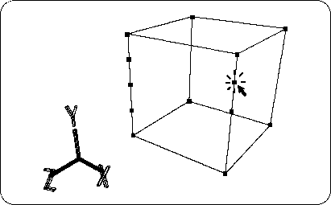

Return to previous page | Return to menu | Go to next page
[Mesh] → [Vertex], middle mouse button
Click the edge (side of the polygon) with to divide the edge at the midpoint and create a new vertex. Click the middle point three times left and right as shown in the figure to divide the edge into four parts (Figure 2-5).
